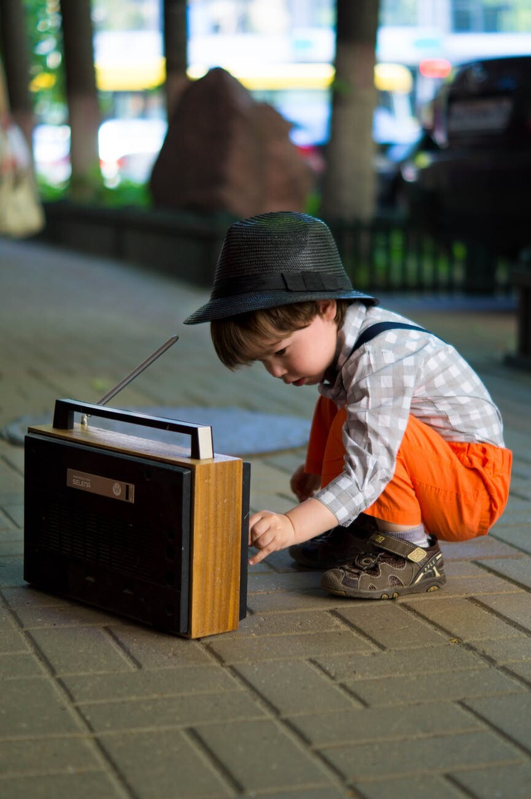
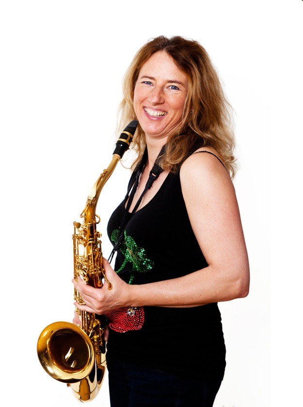
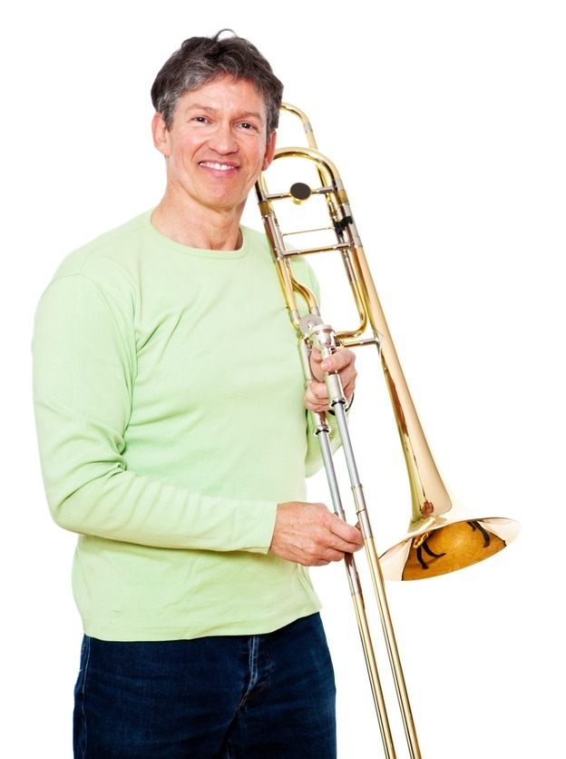

Muziekschool voor iedereen!

Voor een musicus zoals Jesse is het lastig om dat volledig professioneel te doen. Zijn ervaring op de muziekschool bracht hem op het idee een eigen school te beginnen. Jesse zag dat Hannah lesgeven ook geweldig goed kon, dus vroeg hij haar om mee te doen. Ze vonden een mooi pand en ze startten met veel enthousiasme de muziekschool. En daar heeft hij nooit spijt van gekregen! Bij Jesse en Hannah is het leuk én leerzaam!
Hannah
docente Muziek

Hannah is een vrolijke, goedlachse vrouw van 39 jaar. Ze is de vriendin van Jesse. Hannah is al van jongs af aan geïnteresseerd in veel verschillende muziekstijlen. Haar ouders hebben het met de paplepel ingegoten. Langzamerhand werd de trompet echter haar favoriete instrument. Ze speelde op school en had al jong optredens in buurthuizen, op braderieën, enzovoorts.Hannah volgde zelf vanaf haar zesde jaar les op de muziekschool. Vanwege haar talent kreeg zij later privéles. Op de middelbare school besteedde ze veel aandacht aan haar studie en de muziek schoot er een beetje bij in. Maar toen ze haar diploma had behaald, was het conservatorium een logische keus. Ook op het conservatorium viel haar talent op. Ze werd gevraagd voor het studentenorkest en speelde in haar vrije in een jazzband. Daar ontmoette zij Jesse. Gedurende haar studietijd kwamen medestudenten regelmatig naar haar toe met het verzoek om hulp. Dat waren niet alleen trompetstudenten, maar ook studenten die andere blaasinstrumenten bespeelden. Hannah merkte dat bijles geven haar heel goed afging en dat ze het ontzettend leuk vond.
Toen Jesse met het idee kwam om samen een muziekschool te beginnen, hoefde Hannah niet lang na te denken. Het was dé manier om van haar hobby haar beroep te maken en om muziek maken te combineren met lesgeven. Bij Hannah zijn jong en oud in goede handen!
Jesse
docent Muziek

Jesse is een zeer muzikale man van 41 jaar. Hij is de vriend van Hannah. In tegenstelling tot Hannah was hij als jonge jongen niet erg geïnteresseerd in muziek en al helemaal niet in muziek maken. Hij ging liever buiten spelen met zijn vriendjes of voetballen in het park. Zijn ouders vonden het echter wel belangrijk dat hij kennisnam van muziek en ze stuurden Jesse naar blokfluitles. Daar leerde hij de beginselen en leerde hij noten lezenOpleiding
Op de middelbare school was al duidelijk hoe talentvol hij was. Daarom ging hij naar het conservatorium, waar hij Hannah ontmoette. Hij richtte zich op vele verschillende instrumenten en werd opgeleid tot een allround musicus. Maar zijn liefde voor de saxofoon en jazz bleef. Als bijbaantje gaf hij ook les op een muziekschool en ook dat ging hem goed af.